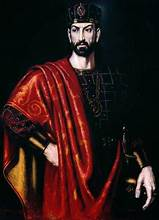

ვახტანგ გორგასალი
ვახტანგ გორგასალი — ქართლის მეფე V საუკუნის II ნახევარში. „გორგასალი“ (სპარს. მგლისთავა) სპარსელებმა შეარქვეს. ვახტანგ გორგასალი გამეფდა 15 წლისა, იმეფა 45 წელი, აღესრულა 60 წლისა. საქართველოს მართლმადიდებელი ეკლესიის მიერ შერაცხულია წმინდანად. მისი მოხსენიების დღეა 13 დეკემბერი.

ყრმობა და სიჭაბუკე
სავარაუდოდ, დაიბადა 442 წელს ქართლის მეფე მირდატ და დედოფალ საგდუხტის ოჯახში. მისი აღმზრდელი ყოფილა საურმაგ სპასპეტი. 449 წელს, როდესაც ვახტანგი 7 წლის იყო გარდაიცვალა მირდატ მეფე.
ქვეყნის მართვა-გამგეობა დროებით ხელში აიღო დედამ, საგდუხტ დედოფალმა. საგდუხტი წარმოშობით ირანელი მოხელის, ბარდავის ერისთავის ბარზაბოდის ქალიშვილი იყო. ბარზაბოდი რელიგიურად მაზდეანი იყო და პროსპარსულ პოლიტიკას უჭერდა მხარს. ის ქრისტიანობის წინააღმდეგი იყო და სიძე-ხელმწიფის მიმართ მტრობას იჩენდა. საგდუხტმა კარგად იცოდა მშობლის ხასიათი, ბოროტი განზრახვა შეუტყო, დაასწრო და თვითონ ეახლა მამას ბარდავში. სთხოვა, არ გაემაზდიანებინა ვახტანგი. ბარზაბოდმა შეიწყალა საფასურის სანაცვლოდ - მცხეთაში მოგვები უნდა დამსხდარიყვნენ და ხალხსაც თვითონ უნდა აერჩია სჯული.
მცხეთაში მოსულ მოგვთა უმაღლესი ქურუმი იყო ბინქარანი, რომელმაც უამრავი ქართველი აცდუნა. ქრისტიანული სამწყოს მეთაურიც სპარსეთის მსტოვარი იყო მცხეთაში, ეპისკოპოსი მობიდანი გარეგნულად მართლმადიდებელი, შიგნიდან მაზდეანი და ყოველგვარი ქართულის შეფარვით მოძულე იყო.
მცირე ხნის შემდეგ ზედიზედ დაიხოცნენ ბარდავის ერისთავი ბარზაბოდი, სპასპეტი საურმაგი და ეპისკოპოსი მობიდანი. საგდუხტ დედოფალმა დრო იხელთა და კონსტანტინოპოლიდან გამოიწვია მიქაელ მღვდელი, რომელიც ეპისკოპოსად დასვა მცხეთაში. მიქაელი საკმაოდ ენერგიული კაცი გამოდგა და მძაფრად აღუდგა წინ ბინქარანს.
ვახტანგის მცირეწლოვანებით და ქვეყნის უპატრონობით ისარგებლეს ალანებმა და 451 წელს გადმოვიდნენ ქართლში. ქვეყანა მოაოხრეს, დაეცნენ კასპს და გაიტაცეს ვახტანგის სამი წლის და — მირანდუხტი.
ამ მომენტით ბიზანტიამაც ისარგებლა. მან ჯერ კლარჯეთი დაიჭირა და შემდგომ აფხაზეთშიც გადმოსხა ლეგიონები. ამის შემდეგ ეგრისს შემოესივნენ და ციხეგოჯამდე მოვიდნენ.